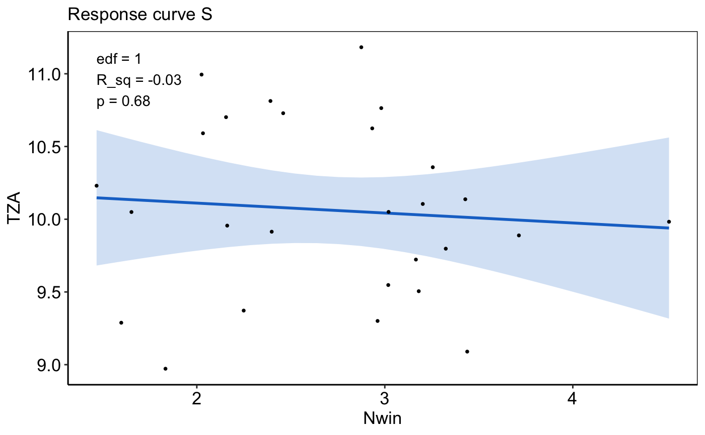
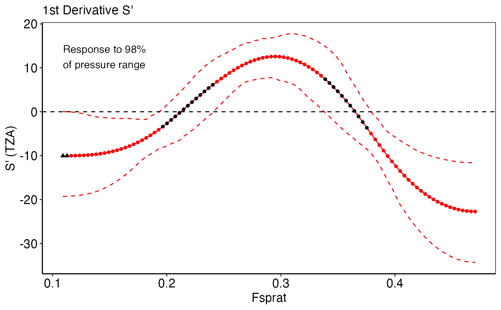
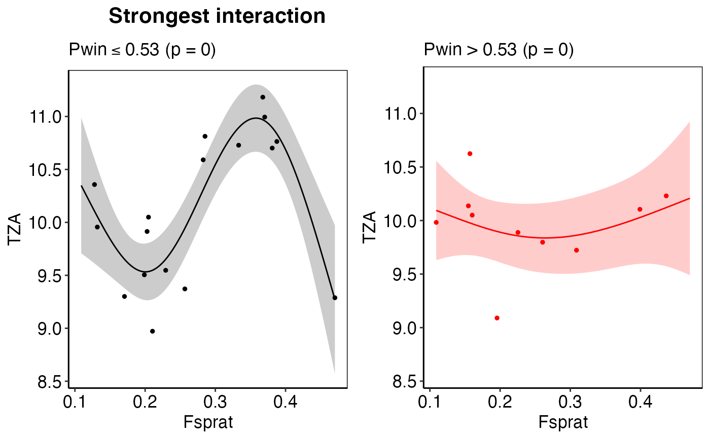
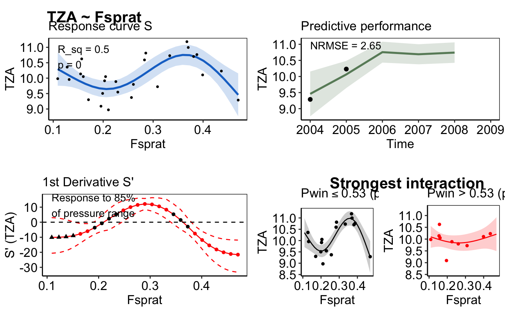

Visualization of all IND~pressure-model results relevant for the scoring
Source:R/plot_model.R
plot_model.Rdplot_model creates a tibble with up to 4 individual plots and one
combined plot (all ggplot2 objects) for each IND~pressure pair in the
input tibble. The number of plots generated depends on the information
provided in the input tibble. If all model IND~pressure modeling functions
have been applied to create the final input tibble all five plots will be
produced.
plot_model( init_tbl, mod_tbl, choose_thresh_gam = NULL, pos_label = "topleft", header = TRUE )
Arguments
| init_tbl | The output tibble of the |
|---|---|
| mod_tbl | Any output tibble from the IND~pressure modeling functions. |
| choose_thresh_gam | Selects the threshold_GAM for the thresh_plot, which is relevant if several models are listed in `thresh_models`. The default is NULL, which shows the best performing threshold_GAM (based on the GCV as selection criterion). |
| pos_label | Specifies the position of the annotation in the plot. Should
be one of "topleft" (default), "topright", "bottomleft" or "bottomright".
For more details see |
| header | logical; if TRUE, each plot will have a header including the IND name, pressure name(s) and the model type. |
Value
The function returns a tibble, including the
following elements:
idNumerical IDs of the IND~press combinations.
indIndicator names.
pressPressure names.
response_plotA list-column of ggplot2 objects that show the observed (black points) and predicted IND response to the single pressure (based on the training data). The solid blue line represents the predicted mean and the transparent polygon the 95% confidence interval. The effective degrees of freedom (edf), R_sq, and p-value from the fitted model are additionally provided. The input needed for this plot is generated from the
model_gamormodel_gammfunctions.predict_plotA list-column of ggplot2 objects that show the robustness of the modeled relationship expressed as the predictive performance (the NRMSE) on a test dataset, e.g the last years of the time series. The solid green line represents the predicted IND value given the observed pressure value for that particular year (both in the training and test data, the latter displayed as green triangles). The transparent polygon represents the 95% confidence interval. Observed IND values of the test data are shown as black triangle, the trainings observations are presented as black circles. The input needed for this plot is generated from the
model_gamormodel_gammfunctions.deriv_plotA list-column of ggplot2 objects that show the first derivatives (S`) of non-linear IND~pressure response curves (edf > 1.5) and the proportion of the pressure range where the IND shows no further significant change (i.e., slope approximates zero). Black triangles represent values at the pressure`s boundary where the zero line falls into the confidence interval, which indicates no further significant IND change. Circle represent values that were considered positive for the calculation of the pressure range (see for more details
calc_deriv). The input needed for this plot is generated from thecalc_derivfunction.thresh_plotA list-column of ggplot2 objects that show the observed IND response curve for a specific pressure under a low (left panel, in black) and high (right panel, in red) regime of an interacting 2nd pressure variable. The solid lines represent the predicted mean and the transparent polygons the 95% confidence intervals. Filled circles represent the observed training observations in each regime. If no thresh_plot is created for that IND~pressure pair, no interaction was found. If more than one interacting pressure variable has been detected, i.e. more than one threshold-GAM performed better than its corresponding GAM, the threshold-GAM with the best GCV will be displayed. The input needed for this plot is generated from the
test_interactionfunction. If the plot shows strange patterns such as smoothers hardly differ in both regimes with wide confidence intervals at the edge or few data points in one regime check the model diagnostics of this threshold model! Outliers can cause such patterns or if threshold is at the edge of the pressure range or other thresholds are similarly likely (see alsoplot_diagnostics.)all_plotsA list-column of ggplot2 objects that show all plots together using additional drawing canvas from the
cowplotpackage on top of ggplot2.
See also
Other IND~pressure modeling functions:
find_id(),
ind_init(),
model_gamm(),
model_gam(),
plot_diagnostics(),
scoring(),
select_model(),
test_interaction()
Examples
# \donttest{ # Using some models of the Baltic Sea demo data in this package mod_tbl <- all_results_ex[4:5, ] init_tbl <- ind_init_ex[4:5, ] dat <- plot_model(init_tbl, mod_tbl, pos_label = "topleft")#> Warning: Removed 1 row(s) containing missing values (geom_path).#> Warning: Removed 1 rows containing missing values (geom_point).#> Warning: Removed 1 row(s) containing missing values (geom_path).#> Warning: Removed 1 rows containing missing values (geom_point).dat$response_plot[[1]]dat$predict_plot[[1]]#> Warning: Removed 1 row(s) containing missing values (geom_path).#> Warning: Removed 1 rows containing missing values (geom_point).dat$deriv_plot[[2]]dat$thresh_plot[[2]]dat$all_plots[[2]]# Apply function to all sign. models and save specific plots id <- which(all_results_ex$p_val <= 0.05) init_tbl <- ind_init_ex[id, ] mod_tbl <- all_results_ex[id, ] dat <- plot_model(init_tbl, mod_tbl, pos_label = "bottomright")#> Warning: Removed 1 row(s) containing missing values (geom_path).#> Warning: Removed 1 rows containing missing values (geom_point).#> Warning: Removed 1 row(s) containing missing values (geom_path).#> Warning: Removed 1 rows containing missing values (geom_point).#> Warning: Removed 1 row(s) containing missing values (geom_path).#> Warning: Removed 1 rows containing missing values (geom_point).#> Warning: Removed 1 row(s) containing missing values (geom_path).#> Warning: Removed 1 rows containing missing values (geom_point).#> Warning: Removed 1 row(s) containing missing values (geom_path).#> Warning: Removed 1 rows containing missing values (geom_point).#> Warning: Removed 1 row(s) containing missing values (geom_path).#> Warning: Removed 1 rows containing missing values (geom_point).#> Warning: Removed 1 row(s) containing missing values (geom_path).#> Warning: Removed 1 rows containing missing values (geom_point).#> Warning: Removed 1 row(s) containing missing values (geom_path).#> Warning: Removed 1 rows containing missing values (geom_point).#> Warning: Removed 1 row(s) containing missing values (geom_path).#> Warning: Removed 1 rows containing missing values (geom_point).#> Warning: Removed 1 row(s) containing missing values (geom_path).#> Warning: Removed 1 rows containing missing values (geom_point).#> Warning: Removed 1 row(s) containing missing values (geom_path).#> Warning: Removed 1 rows containing missing values (geom_point).#> Warning: Removed 8 rows containing missing values (geom_point).#> Warning: Removed 1 row(s) containing missing values (geom_path).#> Warning: Removed 1 rows containing missing values (geom_point).#> Warning: Removed 1 row(s) containing missing values (geom_path).#> Warning: Removed 1 rows containing missing values (geom_point).#> [[1]]#> #> [[2]]#> #> [[3]]#> #> [[4]]#> #> [[5]]#> #> [[6]]#> #> [[7]]#> #> [[8]]#> #> [[9]]#> #> [[10]]#> #> [[11]]#> #> [[12]]#> #> [[13]]#>#> agg_png #> 2# }